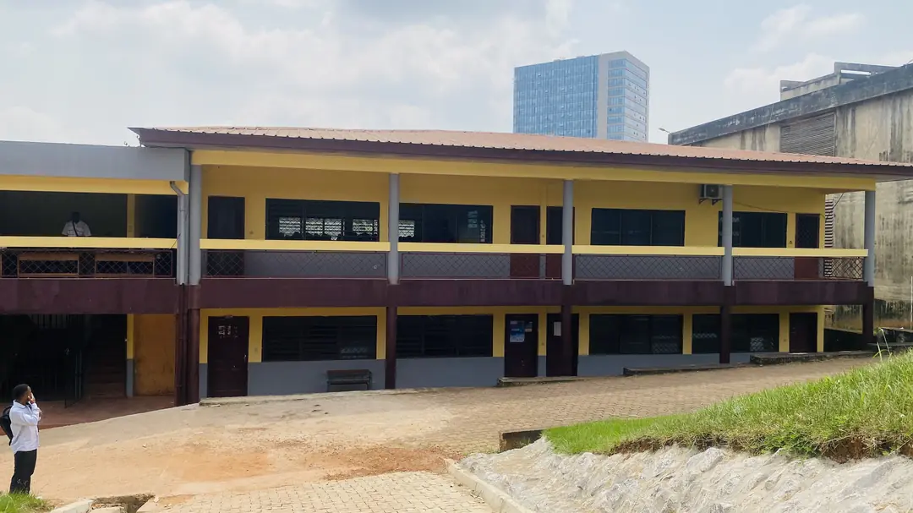
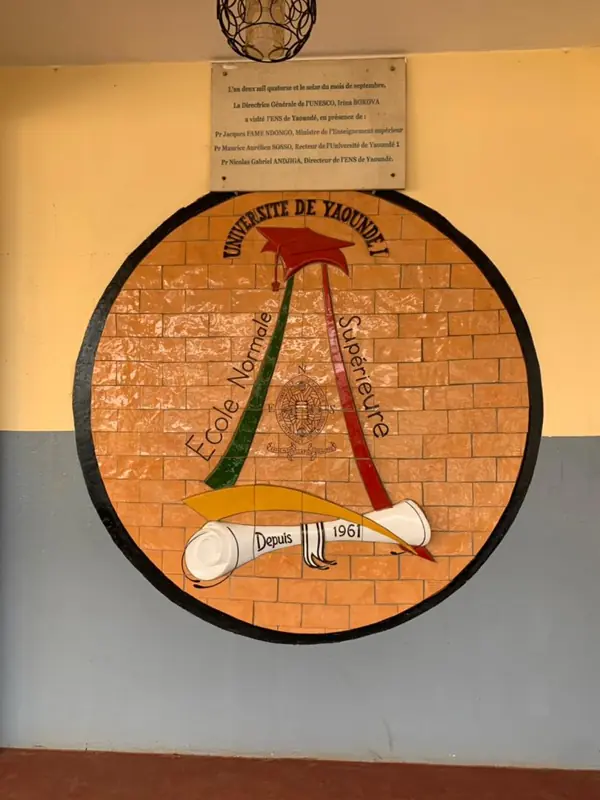

Le département
Identité, missions et organisation du DITE
Présentation
Créé en septembre 2007, le Département d'Informatique et des Technologies Éducatives (DITE) forme les spécialistes des systèmes numériques d'apprentissage et de gestion de l'éducation.
Ses diplômés enseignent l'informatique et les TIC dans les lycées et collèges. Ils sont aussi formés pour piloter les projets d'intégration des TICE, accompagner le passage au numérique, assister techniquement les personnels et gérer les systèmes d'information de l'éducation.
Le département accueille deux cycles de formation : le premier cycle, en trois ans, mène au DIPES I ; le second cycle, en deux ans, mène au DIPES II.
Voir le cursus et les niveaux
Mot du chef de département
Pr Marcel Fouda Ndjodo
Chef de département selon le site de l'ENS (page non datée, information à confirmer)
Le mot du chef de département, de 150 à 250 mots, sera publié ici après rédaction ou validation par l'intéressé.
Missions
Le département forme des enseignants et des spécialistes capables de :
-
enseigner l'informatique et les TIC dans les lycées et collèges ;
-
piloter les projets d'intégration des TICE ;
-
accompagner le passage au numérique ;
-
assister techniquement les personnels ;
-
gérer les systèmes d'information de l'éducation.
Organisation
| Fonction | Nom | Contact institutionnel |
|---|---|---|
| Chef de département | Pr Marcel Fouda Ndjodo (à confirmer) | À compléter |
| Responsable du niveau 1 | À compléter | À compléter |
| Responsable du niveau 2 | À compléter | À compléter |
| Responsable du niveau 3 | À compléter | À compléter |
| Responsable du niveau 4 | À compléter | À compléter |
| Responsable du niveau 5 | À compléter | À compléter |
| Secrétariat | À compléter | À compléter |
La liste complète des enseignants figure sur la page Enseignants.

Au sein de l'ENS de Yaoundé
Le DITE est un département de l'École Normale Supérieure de Yaoundé, établissement de l'Université de Yaoundé I chargé de la formation des enseignants de l'enseignement secondaire.
Le concours d'entrée est ouvert chaque année par arrêté du ministre de l'Enseignement supérieur, et l'inscription se fait sur la plateforme en ligne de l'ENS. Pour les démarches administratives générales, consultez le site de l'École.
Site de l'ENS de YaoundéSource : page du département sur le site de l'ENS de Yaoundé, consultée le 27 novembre 2026.